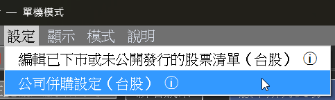
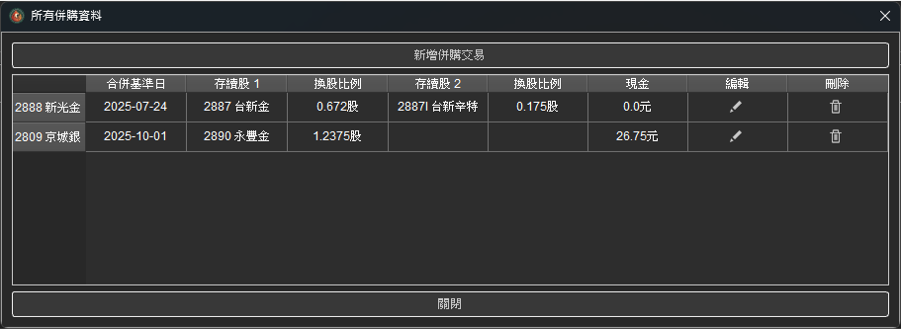
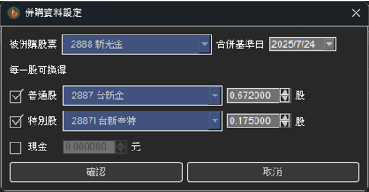
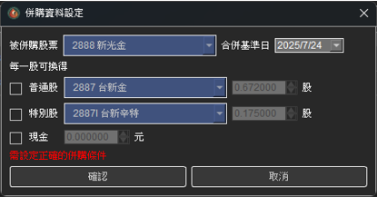
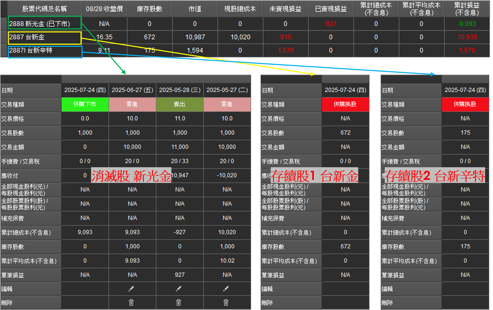
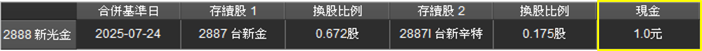
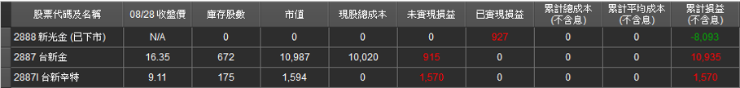
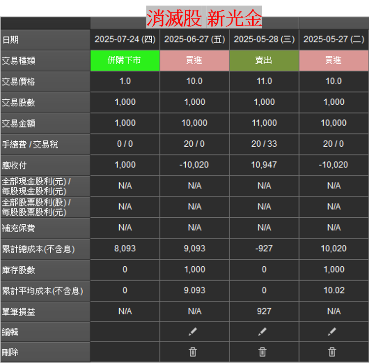
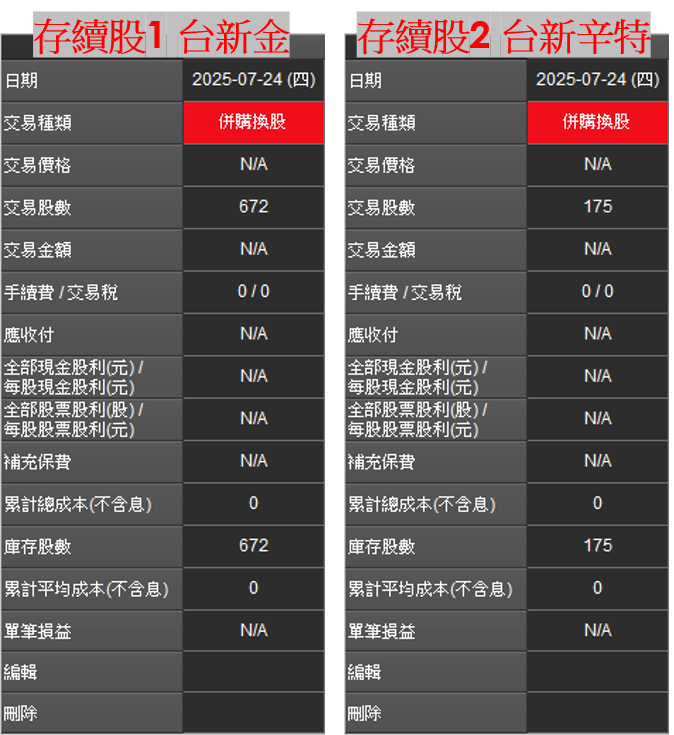

併購設定（自動帶入與手動設定）
StockKeeper 從 v3.3.0 起， 雲端模式會自動帶入 2009 年起的歷史併購資料， 多數情況下使用者不需要再手動設定。 如果是單機模式、或想覆寫自動帶入的內容，本頁也說明手動設定的流程。
1、雲端模式自動帶入 v3.3.0 新增
啟動雲端模式後，併購設定視窗會自動顯示 2009 年起的歷史併購資料。 每一筆會以「自動」標示來源，方便辨識。

支援的併購情境包含：
● 多家公司合而為一：例如 3514 昱晶與 3561 昇陽光電合併為 3576 聯合再生。

● 連續併購串接：例如 2456 奇力新先併購 3068 美磊科技，之後 2327 國巨* 又併購 2456 奇力新。


● 控股公司轉型：有些公司只是單純轉型為控股公司、但股票代碼有更換，這類也會自動處理，例如 6251 定穎 轉為 3715 定穎投控。
● Hover 提示：滑鼠移到「併購換股」或「併購下市」欄位上時，會顯示是從哪支股票轉換而來、或要轉換到哪支股票。


提醒：自動帶入的併購資料為開發者從相關新聞整理取得，若發現錯誤，歡迎回報。
2、調整或停用自動帶入的內容
自動帶入後仍保留完整彈性：
● 取消套用：即使有自動帶入的併購資料，仍可選擇「不套用」， 程式就不會使用這筆併購資料。
● 手動覆寫：覺得自動帶入的條件不正確時，可直接手動輸入新的併購條件， 系統會以手動輸入為主。
3、手動設定併購（單機模式或自訂時使用）
單機模式不會自動帶入併購資料，需要使用者自行輸入。 雲端模式則用在覆寫自動帶入的內容、或補上自動資料未涵蓋的併購時。
步驟一：開啟併購設定
點選工具列的「設定」並選擇「公司併購設定」：

步驟二：檢視及編輯已存在的併購，或新增併購
開啟併購設定功能後，會看到已經存在的併購資料，從這邊可以編輯或刪除現有的併購資料，也可以新增新的併購資料。

設定併購條件時，至少要從『普通股』、『特別股』、『現金』裡面選擇一個，不然就不予通過。


併購設定後，會自己產生存續股及相對應的資料出來。

4、計算參考
被併購消滅的股票，他的現股成本（劵商 App 顯示成本）會被挪進存續的股票裡，但若是存續股票不只一支（例如 2887 台新金及 2887I 台新辛種特別股），那麼現股成本只會被挪進主要股票，不會挪進特別股裡。
被併購消滅的股票，他的累計損益會繼續被保留在原始這支股票裡。因為併購時也有可能沒有換股，單純只是現金溢價收購。
下面用修改過的併購條件來解釋計算原理（台新新光合併實際上沒有現金，但這邊多增加 1 元現金來說明有現金時的併購狀況）：




被併購股票的累計損益計算：–10,020（第一次買進）+10,947（第一次賣出）–10,020（第二次買進）+1,000（併購獲得現金）= –8,093
但相對的，台新金的累計損益就變成：10,987（市值）– 20（手續費）– 32（交易稅）– 0（累計成本）= 10,935
然後台新辛特的累計損益則是：1,594（市值）– 20（手續費）– 4（交易稅）– 0（累計成本）= 1,570